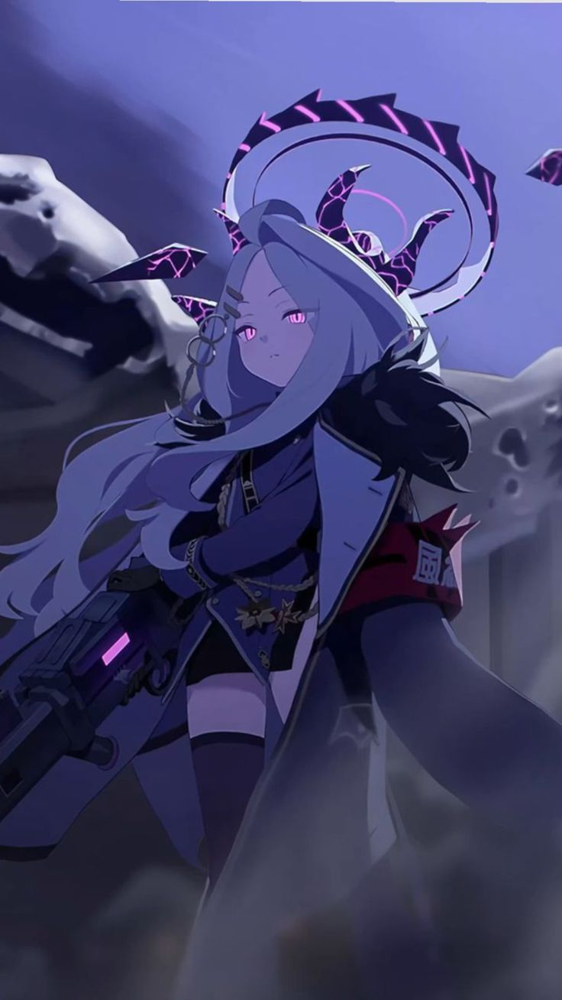

Sorasaki Hina adalah ketua dari Prefect Team, organisasi disiplin utama di Gehenna Academy yang bertugas menjaga ketertiban di sekolah yang terkenal penuh kekacauan tersebut.
Sebagai pemimpin Prefect Team, Hina memikul tanggung jawab yang sangat besar. Ia harus menangani berbagai masalah yang terus muncul di Gehenna, mulai dari keributan kecil hingga insiden berskala besar yang melibatkan banyak siswa.
Karena tekanan pekerjaan yang berat, Hina sering terlihat lelah dan kurang tidur. Walaupun begitu, ia tetap menjalankan tugasnya dengan serius demi menjaga Gehenna tetap terkendali.
Hina dikenal sebagai salah satu petarung terkuat di Gehenna Academy. Kemampuan tempurnya sangat ditakuti, bahkan banyak siswa langsung menyerah hanya dengan mendengar namanya.
Di balik reputasinya yang menakutkan, Hina sebenarnya memiliki sisi lembut dan cukup pemalu, terutama saat berhadapan dengan Sensei atau situasi yang bersifat pribadi.
Hina adalah pribadi yang serius, disiplin, dan sangat bertanggung jawab.
Ia jarang menunjukkan emosi secara berlebihan dan lebih sering menyimpan perasaannya sendiri agar tidak membebani orang lain.
Walaupun terlihat dingin dan tegas, Hina sebenarnya mudah merasa malu dan cukup sensitif ketika diperlakukan dengan perhatian khusus.
Hina bekerja bersama anggota Prefect Team lainnya seperti Ako, Iori, dan Chinatsu untuk menjaga ketertiban di Gehenna.
Ia sangat dipercaya oleh bawahannya karena dianggap sebagai pemimpin yang kuat dan dapat diandalkan.
Dalam banyak cerita event maupun hubungan personal, Hina menunjukkan rasa nyaman dan kedekatan yang cukup besar terhadap Sensei.